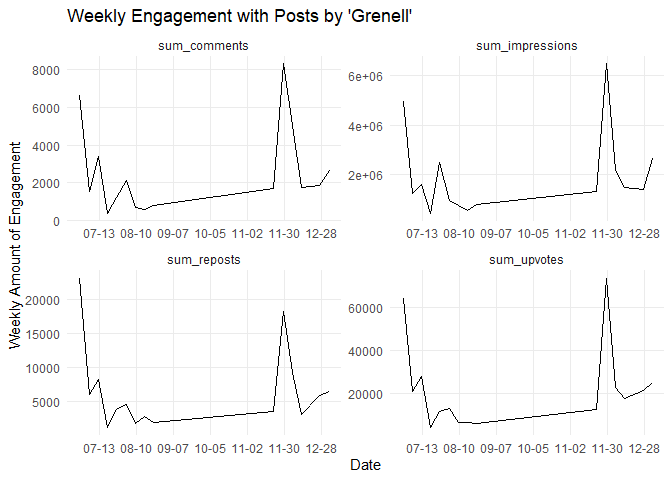
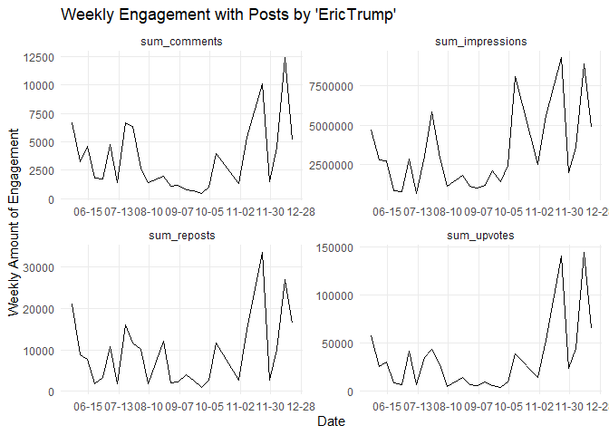

parleR: An R-Interface to Parler.com (backend-credits to castlelemongrab/parlance) ================ Marcel Schliebs and Dorian Quelle January 10, 2020
Credits and Disclaimers
Disclaimer 1: This package was just before release when Amazon announced the upcoming shut-down of Parler. While chances are high that this tool is broken by the time you read this lines, we wanted to get our current beta version out as quickly as possible to create at least a few hours of usefulness for the research community. We apologize for any bug you will be very likely to encounter, but the pending shut-down prevented us from implementing proper checks and doing extensive beta testing.
Disclaimer 2: This R package is a backend to the node.js based command line tool parlance published here: https://github.com/castlelemongrab/parlance/. We attribute full credits to the authors of parlance and ask you to equally credit them when using this package. Similar to the legal notes described here (https://github.com/castlelemongrab/parlance#legal), we do not take any responsibility for how you use the piece of software. We do not encouragement the breach of Terms of Service of any company, except in legally and ethically permitted cases, such as for academic research. See further the bottom of this document for additional legal notes. Copyright for Backend: 2020 The Parlance Team Copyright 2020 Baby Britain, Ltd.
Pre-Installation Steps and System Requirements
Installing node.js
To use this software, node.js must be installed. Go to https://nodejs.org/en/download/ and select the version designed for your system. Following the automatic installation of node.js, you can use parleR.
Installing parlance
This package is an R implementation of the software Parlance from https://github.com/castlelemongrab. To use it, please install parlance. Open a terminal window and enter:
npm install -g @castlelemongrab/parlanceTo check whether the installation was successful, enter:
parlanceThe output should look like this:
Commands:
parlance init Create an authorization file
parlance feed Fetch your own feed of posts
parlance profile Fetch a user profile
parlance post Fetch a single post by identifier
parlance posts Fetch all posts for a user
parlance following Fetch all users followed by a user
parlance followers Fetch all followers of a user
parlance comments Fetch all comments for a user, post, or comment
parlance tags Fetch all posts mentioning a hashtag
parlance votes Fetch all votes made by a user
parlance write Post a new message to your account
parlance delete Delete an existing message from your account
parlance follow Follow a user
parlance unfollow Unfollow an already-followed user
parlance mute Mute a user
parlance news Fetch your own affiliate news feed
parlance moderation Fetch your list of comments for moderation
Options:
--help Show help [boolean]
--version Show version number [boolean]
--show-hidden Show hidden options [boolean]
--format-options Provide format/type-specific options [string]
-c, --credentials MST/JST tokens [string] [default: "config/auth.json"]
-o, --credentials-out Output file for client credentials [string]
-S, --start-key Specify a time-series start/resume key [string]
-E, --end-key Specify a time-series end/halt key [string]
-l, --ignore-last Rely solely upon time comparisons [boolean]
-n, --no-delay Disable the failsafe rate-limiter [boolean]
-p, --page-size Request a specific page size [number]
-d, --debug Print all debug information to stderr [boolean]
-v, --verbose Print verbose information to stderr [boolean]
-q, --quiet Print less information to stderr [boolean]
-s, --silent Print absolutely no information to stderr [boolean]
-e, --expand Expand specific UUID types [array] [default: "all"]
-f, --format Select output format/type [string] [default: "json"]Authenticating for Parlance via
To use this package, you first must authenticate within your project/working directory. Run the following function, which will write a file called auth.json into a folder called config. The file will have the format {“mst” : “s:……..”, “jst” : “…..”}.
parler_auth(decode = TRUE,
path = "config/auth.json",#DO NOT CHANGE
option = "enter")Now you’re ready to go.
Get Posts by Username
post_df1 <-
parler_posts(user = "Grenell",
output_format = "data.frame",
flatten_sep = " || ",
parse_numbers = TRUE,
verbose = TRUE)
#> [1] "Scraping profile information for 'Grenell'. This might take a while."
colnames(post_df1)
#> [1] "id1" "at"
#> [3] "article" "body"
#> [5] "comments" "createdAt"
#> [7] "creator_id" "creator_bio"
#> [9] "creator_blocked" "creator_human"
#> [11] "creator_integration" "creator_joined"
#> [13] "creator_name" "creator_rss"
#> [15] "creator_private" "creator_profilePhoto"
#> [17] "creator_username" "creator_verified"
#> [19] "creator_verifiedComments" "creator_"
#> [21] "creator_score" "creator_interactions"
#> [23] "creator_media" "creator_badges"
#> [25] "depth" "depthRaw"
#> [27] "hashtags" "id"
#> [29] "impressions" "links"
#> [31] "preview" "reposts"
#> [33] "shareLink" "sensitive"
#> [35] "state" "upvotes"
#> [37] "parent" "root"
post_df1 %>%
dplyr::select(creator_username,body,impressions,upvotes,createdAt)
#> # A tibble: 83 x 5
#> creator_username body impressions upvotes createdAt
#> <chr> <chr> <dbl> <dbl> <chr>
#> 1 Grenell "Start following people - ~ 245000 6600 2021-01-09T~
#> 2 Grenell "Start following people - ~ 129000 1700 2021-01-09T~
#> 3 Grenell "I’ll be on with @SeanHann~ 299000 2300 2021-01-07T~
#> 4 Grenell "" 336000 2500 2021-01-03T~
#> 5 Grenell "" 925000 9200 2021-01-03T~
#> 6 Grenell "" 907000 9200 2021-01-03T~
#> 7 Grenell "New year means opening up~ 336000 2500 2021-01-01T~
#> 8 Grenell "" 148000 1500 2020-12-31T~
#> 9 Grenell "" 413000 3900 2020-12-26T~
#> 10 Grenell "Today I’m thinking of tho~ 413000 3900 2020-12-25T~
#> # ... with 73 more rowsPlot weekly likes over time
weekly_engagement <-
post_df1 %>%
mutate(week = lubridate::round_date(as_datetime(createdAt),"weeks")) %>%
group_by(week) %>%
summarise(across(.cols = all_of(c("impressions","upvotes",
"reposts","comments")),
.fns = sum,
.names = "sum_{.col}")) %>%
filter(week < as.Date("2021-01-10"))
ggplot(weekly_engagement %>% gather(var,val,-week)) +
geom_line(aes(x = week,y = val)) +
facet_wrap(~var,ncol = 2,scales = "free") +
theme_minimal() +
scale_x_datetime(date_breaks = "4 weeks",
date_labels = "%m-%d") +
theme(panel.grid.minor = element_blank()) +
labs(title = "Weekly Engagement with Posts by 'Grenell'",
x = "Date",
y = "Weekly Amount of Engagement")
Same for ‘EricTrump’ (no idea if account is legit):
post_df2 <-
parler_posts(user = "EricTrump",
output_format = "data.frame",
flatten_sep = " || ",
parse_numbers = TRUE,
verbose = TRUE)
#> [1] "Scraping profile information for 'EricTrump'. This might take a while."
post_df2 %>%
dplyr::select(creator_username,body,impressions,upvotes,createdAt)
#> # A tibble: 71 x 5
#> creator_username body impressions upvotes createdAt
#> <chr> <chr> <dbl> <dbl> <chr>
#> 1 EricTrump "" 3800000 96000 2021-01-09T~
#> 2 EricTrump "Hello Friends!!! \U0001f1~ 4100000. 68000 2021-01-09T~
#> 3 EricTrump "Congratulations to @Trump~ 2700000 15000 2020-12-18T~
#> 4 EricTrump "" 2200000 50000 2020-12-17T~
#> 5 EricTrump "Just chilling with Grandp~ 2500000 64000 2020-12-16T~
#> 6 EricTrump "When you rearrange the sh~ 2400000 32000 2020-12-12T~
#> 7 EricTrump "The shooting sports were ~ 2200000 31000 2020-12-09T~
#> 8 EricTrump "Proud of @LaraleaTrump!!" 1800000 18000 2020-12-09T~
#> 9 EricTrump "" 2200000 30000 2020-12-08T~
#> 10 EricTrump "Happy Saturday Friends!" 1400000 15000 2020-12-05T~
#> # ... with 61 more rowsPlot weekly likes over time
weekly_engagement <-
post_df2 %>%
mutate(week = lubridate::round_date(as_datetime(createdAt),"weeks")) %>%
group_by(week) %>%
summarise(across(.cols = all_of(c("impressions","upvotes",
"reposts","comments")),
.fns = sum,
.names = "sum_{.col}")) %>%
filter(week < as.Date("2021-01-10"))
ggplot(weekly_engagement %>% gather(var,val,-week)) +
geom_line(aes(x = week,y = val)) +
facet_wrap(~var,ncol = 2,scales = "free") +
theme_minimal() +
scale_x_datetime(date_breaks = "4 weeks",
date_labels = "%m-%d") +
theme(panel.grid.minor = element_blank()) +
labs(title = "Weekly Engagement with Posts by 'EricTrump'",
x = "Date",
y = "Weekly Amount of Engagement")
Get all Posts with a certain Hashtag
Because there are thousands of posts, we time out the request after a certain amount of seconds.
hashtag_posts_df1 <-
parler_hashtag(hashtag = "maga",
output_format = "data.frame",
flatten_sep = " || ",
parse_numbers = TRUE,
verbose = TRUE,
timeout = 60)
#> [1] "Scraping Parley including hashtag '#maga'. This might take a while."
colnames(hashtag_posts_df1)
#> [1] "id1" "at"
#> [3] "article" "body"
#> [5] "comments" "createdAt"
#> [7] "creator_id" "creator_bio"
#> [9] "creator_blocked" "creator_human"
#> [11] "creator_integration" "creator_joined"
#> [13] "creator_name" "creator_rss"
#> [15] "creator_private" "creator_profilePhoto"
#> [17] "creator_username" "creator_verified"
#> [19] "creator_verifiedComments" "creator_score"
#> [21] "creator_interactions" "creator_state"
#> [23] "creator_media" "creator_badges"
#> [25] "depth" "depthRaw"
#> [27] "hashtags" "id"
#> [29] "impressions" "links"
#> [31] "preview" "reposts"
#> [33] "shareLink" "sensitive"
#> [35] "state" "upvotes"
#> [37] "creator_coverPhoto" "parent"
#> [39] "root" "creator_"
hashtag_posts_df1 %>%
head(50) %>%
dplyr::select(creator_username,body,impressions,upvotes,createdAt)
#> # A tibble: 50 x 5
#> creator_username body impressions upvotes createdAt
#> <chr> <chr> <dbl> <dbl> <chr>
#> 1 Ivanka2020 "Hey Republicans,\n\nTrump~ 351 4 2021-01-10T~
#> 2 Areebanaseem113 "#FightForTrump #TRUMP2020~ 961 8 2021-01-10T~
#> 3 Slime83 "#SlimeMoldParler says FUC~ 307 1 2021-01-10T~
#> 4 MartyLevine "If “Amazon” is jumping in~ 50 1 2021-01-10T~
#> 5 TrumpTrainTeam "#stopthesteal #VoterFraud~ 838 19 2021-01-10T~
#> 6 WarrenPeace310 "Pence is a traitor and al~ 440 4 2021-01-10T~
#> 7 Hikkijorza "Election Update: Trump Le~ 716 4 2021-01-10T~
#> 8 Gayslime "#SlimeMoldParler says FUC~ 303 1 2021-01-10T~
#> 9 PATRIOTGANGSTER "When you point your finge~ 314 5 2021-01-10T~
#> 10 Doggoslime "#SlimeMoldParler says FUC~ 446 1 2021-01-10T~
#> # ... with 40 more rowsGet User Profile Data
R data.frame (nested variables flattened)
out <-
parler_profile(user = "caseybmulligan",
output_format = "data.frame",
flatten_sep = " || ",
token_variables = F,
parse_numbers = TRUE,
verbose = TRUE)
#> [1] "Scraping profile information for caseybmulligan"
#> Warning: Flattened variable 'badges' of length 2 with separator ' || '
colnames(out)
#> [1] "accountColor" "bio" "blocked" "coverPhoto"
#> [5] "human" "id" "integration" "joined"
#> [9] "name" "private" "profilePhoto" "rss"
#> [13] "username" "verified" "verifiedComments" "badges"
#> [17] "score" "interactions" "state" "banned"
#> [21] "comments" "followers" "following" "likes"
#> [25] "posts" "media"
out %>%
select(name,username,followers,likes,posts,joined,bio)
#> # A tibble: 1 x 7
#> name username followers likes posts joined bio
#> <chr> <chr> <dbl> <dbl> <chr> <chr> <chr>
#> 1 Casey B.~ caseybmul~ 121000 126 261 2020-10-~ "You're Hired! Untold Su~Without Token-associated variables
out2 <-
parler_profile(user = "caseybmulligan",
output_format = "data.frame",
flatten_sep = " || ",
token_variables = TRUE,
parse_numbers = TRUE,
verbose = TRUE)
#> [1] "Scraping profile information for caseybmulligan"
#> Warning: Flattened variable 'badges' of length 2 with separator ' || '
colnames(out2)
#> [1] "accountColor" "bio" "blocked" "coverPhoto"
#> [5] "followed" "human" "id" "integration"
#> [9] "joined" "name" "muted" "pendingFollow"
#> [13] "private" "profilePhoto" "rss" "username"
#> [17] "verified" "verifiedComments" "badges" "score"
#> [21] "interactions" "state" "banned" "isFollowingYou"
#> [25] "comments" "followers" "following" "likes"
#> [29] "posts" "media"New colnames which are only outputtet if token_variables == TRUE:
JSON List Object
jlist <-
parler_profile(user = "caseybmulligan",
output_format = "list",
flatten_sep = " || ",
verbose = FALSE)
str(jlist)
#> List of 31
#> $ _id : chr "ccab997e08254afe9231c35857f95d81"
#> $ accountColor : chr "#4aa046"
#> $ bio : chr "You're Hired! Untold Successes and Failures of a Populist President. yourehiredtrump.com \"Profound, important,"| __truncated__
#> $ blocked : logi FALSE
#> $ coverPhoto : chr "1ff7f29dc2134ab0828d0a090c607711"
#> $ followed : logi FALSE
#> $ human : logi TRUE
#> $ id : chr "ccab997e08254afe9231c35857f95d81"
#> $ integration : logi FALSE
#> $ joined : chr "20201015232824"
#> $ name : chr "Casey B. Mulligan"
#> $ muted : logi FALSE
#> $ pendingFollow : logi FALSE
#> $ private : logi FALSE
#> $ profilePhoto : chr "bae299d65951425d8a2e3daa8a1d540b"
#> $ rss : logi FALSE
#> $ username : chr "caseybmulligan"
#> $ verified : logi TRUE
#> $ verifiedComments: logi FALSE
#> $ badges :List of 2
#> ..$ : int 1
#> ..$ : int 0
#> $ score : chr "45k"
#> $ interactions : int 259
#> $ state : int 1
#> $ banned : logi FALSE
#> $ isFollowingYou : logi FALSE
#> $ comments : chr "50"
#> $ followers : chr "121k"
#> $ following : chr "61"
#> $ likes : chr "126"
#> $ posts : chr "261"
#> $ media : chr "27"Multiple Users
user_vec <- c("Marklevinshow","SeanHannity","Devinnunes","GovernorNoem",
"KTHopkins","Westmonster","TommyRobinson")
out_df <-
purrr::map(.x = user_vec,
.f = ~
parler_profile(user = .x,
output_format = "data.frame",
flatten_sep = " || ",
token_variables = FALSE,
parse_numbers = TRUE,
verbose = FALSE)
) %>%
bind_rows()
#> Warning: Outer names are only allowed for unnamed scalar atomic inputs
#> New names:
#> * `` -> ...19
#> Warning: Outer names are only allowed for unnamed scalar atomic inputs
#> New names:
#> * `` -> ...20
#> Warning: Outer names are only allowed for unnamed scalar atomic inputs
#> New names:
#> * `` -> ...21
#> Warning: Outer names are only allowed for unnamed scalar atomic inputs
#> New names:
#> * `` -> ...20
#> New names:
#> * ...19 -> ...15
#> New names:
#> * ...20 -> ...16
#> New names:
#> * ...21 -> ...16
#> New names:
#> * ...20 -> ...16
out_df %>%
select(name,username,followers,likes,posts,joined,bio)
#> # A tibble: 7 x 7
#> name username followers likes posts joined bio
#> <chr> <chr> <dbl> <dbl> <chr> <chr> <chr>
#> 1 Mark Lev~ Marklevin~ 4900000 0 3.5k 2019-06-~ "THIS IS THE OFFICIAL MA~
#> 2 Sean Han~ SeanHanni~ 7600000 0 2.5k 2020-06-~ "TV Host Fox News Channe~
#> 3 Devin Nu~ Devinnunes 2900000 528 1.7k 2020-02-~ <NA>
#> 4 Gov. Kri~ GovernorN~ 798000 0 40 2020-11-~ "South Dakotan. Wife. Mo~
#> 5 Katie Ho~ KTHopkins 473000 8 1.3k 2020-06-~ "the Biggest Bitch in Br~
#> 6 Westmons~ Westmonst~ 149000 0 1.4k 2020-06-~ "WESTMONSTER.COM - News ~
#> 7 Tommy Ro~ TommyRobi~ 363000 94 6.8k 2019-06-~ "I’m back \n\nhttps://ww~Legal Remarks and Credits:
This package is a mere R-frontend wrapper to the backend provided by parlance (https://github.com/castlelemongrab/parlance). As your machine will be calling ‘parlance’ to scrape data, we emphatically repeat the legal nodes by the authors of parlance in this place. You can find them here: https://github.com/castlelemongrab/parlance#legal
QUOTE: "This repository seeks to document the design of Parler as accurately and concisely as possible. Parler is of interest to researchers, political campaigns, civic engagement groups, law enforcement, anti-discrimination groups, and the public at large. The free speech conveyed in this repository is of timely and widespread public interest.
If you choose to use this speech as part of an activity, please ensure your activity is ethical and legal within your jurisdiction. The author of this work of speech cannot, will not, and has no responsibility to control the behavior of others – in any jurisdiction, on any of Jupiter’s mighty moons, or anywhere within the known universe – past, present, or future.
Due to the specific nature and quality of Parler’s engineering design, the speech contained within this repository is the sole product of unrelated industry experience and third-party documentation. No act of disassembly, decompilation, reverse engineering, trade secret violation – nor any other prohibited act – was necessary to create the work contained herein.
“Communication does not lose constitutional protection as ‘speech’ simply because it is expressed in the language of computer code. Mathematical formulae and musical scores are written in ‘code,’ i.e. symbolic notations not comprehensible to the uninitiated, and yet both are covered by the First Amendment. If someone chose to write a novel entirely in computer object code by using strings of 1’s and 0’s for each letter of each word, the resulting work would be no different for constitutional purposes than if it had been written in English.” – DMCA, Universal City Studios v. Corley, FN191: 273 F.3d 429, 60 USPQ2d 1953 (2nd Cir. 2001)
Congress shall make no law respecting an establishment of religion, or prohibiting the free exercise thereof; or abridging the freedom of speech, or of the press; or the right of the people peaceably to assemble, and to petition the Government for a redress of grievances. "
Copyright for Backend: 2020 The Parlance Team Copyright 2020 Baby Britain, Ltd.
License Statement for Parlance Backend: THE SOFTWARE IS PROVIDED “AS IS”, WITHOUT WARRANTY OF ANY KIND, EXPRESS OR IMPLIED, INCLUDING BUT NOT LIMITED TO THE WARRANTIES OF MERCHANTABILITY, FITNESS FOR A PARTICULAR PURPOSE AND NONINFRINGEMENT. IN NO EVENT SHALL THE AUTHORS OR COPYRIGHT HOLDERS BE LIABLE FOR ANY CLAIM, DAMAGES OR OTHER LIABILITY, WHETHER IN AN ACTION OF CONTRACT, TORT OR OTHERWISE, ARISING FROM, OUT OF OR IN CONNECTION WITH THE SOFTWARE OR THE USE OR OTHER DEALINGS IN THE SOFTWARE.